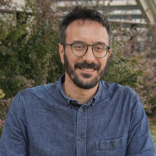
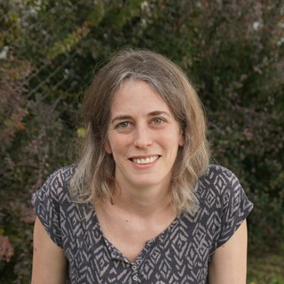
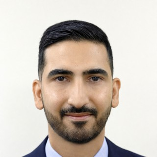
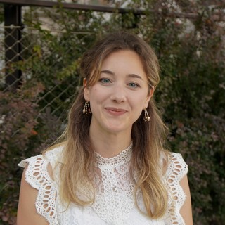
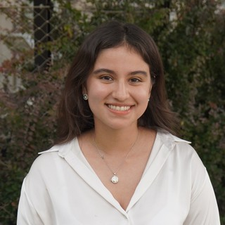
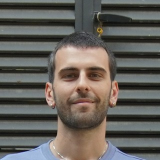
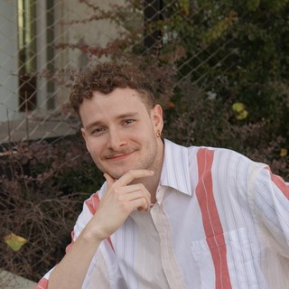
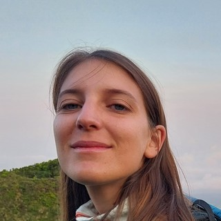
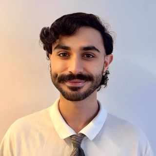

DICA
We combine environmental biotechnology, resource recovery, waste valorization, and process modeling to recover nutrients, biopolymers, and energy from streams currently treated as waste.
Real reactors and analytical methods, not just simulations.
Thesis work that's built to become a conference paper or journal article.
Projects grounded in problems real treatment facilities are trying to solve.
Our projects sit at the intersection of microbiology, circular economy engineering, and process engineering, all aimed at closing the loop between what a treatment plant takes in and what it can give back.
Microbial and phototrophic processes for water and wastewater treatment, biomass production, and recovery of useful products.
Recovery of nutrients, biopolymers, proteins, and other products from wastewater, sludge, and agro-industrial residues.
Conversion of organic waste, residual biomass, and industrial by-products into materials, chemicals, and bioenergy.
Mechanistic and CFD modeling, process design and scale-up, techno-economic assessment, and environmental performance evaluation.
Every project in the group follows the same underlying logic, applied to a different waste type or process.
Understand the composition, variability, and hidden potential of a wastewater or byproduct stream.
Design biological or thermochemical systems that selectively remove, transform, or recover target compounds.
Deliver a usable output — clean water, fertilizer, chemicals, or metals — at a scale that makes sense for real facilities.
A mix of graduate researchers, undergraduates, and collaborators working across the group's project areas.

The WAVE group, DICA — Politecnico di Milano.










A running list of peer-reviewed papers and conference proceedings from the group.
Recent publications, events, and milestones from the WAVE research group.
Our latest paper in Bioresource Technology presents an integrated experimental and mechanistic framework for scaling up photobioreactors used in resource recovery.
This Sunday at Politecnico di Milano, our group runs three hands-on activities for children — microbial metabolism, waste recycling, and water purification — plus guided tours of our environmental engineering labs.
Our team has grown to 15 researchers working across biotechnology, resource recovery, and process modeling.
We're always open to hearing from prospective students and collaborators working on water, waste, and resource recovery.
DICA — Dipartimento di Ingegneria Civile e Ambientale
Politecnico di Milano
Milan, Italy